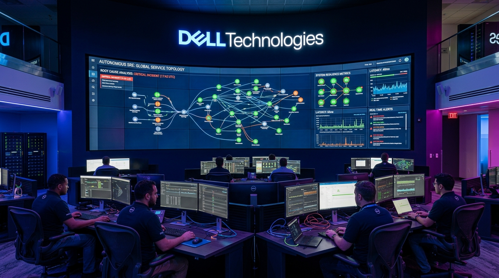
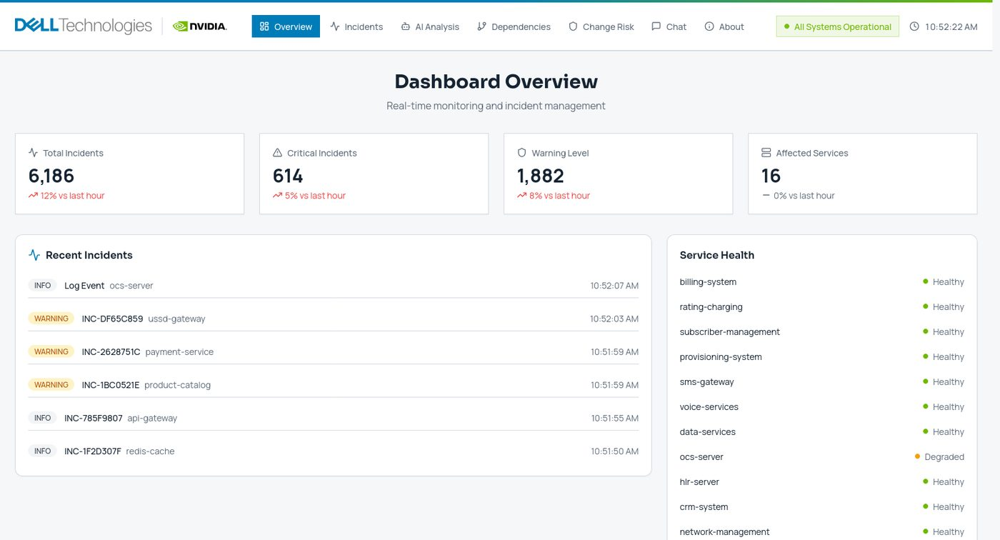

When something breaks at 3am,
what actually broke?
Synapse turns an enterprise CMDB dependency graph into real-time operational intelligence. It maps every alert across 19,000 components and 31,000 dependency edges, reasoning over graph topology to isolate true root cause, calculate customer blast radius, and score deployment risk before changes ship.

During an outage, three questions decide downtime cost. Most institutions answer all three by frantically paging engineers who happen to remember how legacy systems connect:
In modern financial infrastructure, a single infrastructure failure triggers cascade alerts across dozens of downstream microservices. Rather than human teams triaging 40 separate alerts across disparate Slack channels, graph traversal collapses the entire alert storm back to its common ancestor origin.

Forty components flash red simultaneously. Five engineering squads join an emergency bridge. Thirty minutes are lost establishing who depends on whom.
The reasoning agent traverses dependency edges backwards from the alert to the root failure, identifying the exact disk volume in 4 seconds.
Rather than asking an LLM to guess infrastructure from hallucinations, the agent uses structured tools over MCP to traverse the ground-truth CMDB graph:
| MCP Tool Interface | Operational Capability |
|---|---|
depends_on_chain | Backward traversal — isolates exact upstream physical root cause |
affects_chain | Forward traversal — calculates downstream customer and revenue blast radius |
execute_sql_query | Read-only schema queries, double-guarded against state modification |
verify_component_existence | Strict CMDB validation with entity fallback suggestions |
get_component_name_suggestions | Fuzzy phonetic matching when alerts report non-canonical service aliases |
An incident bridges seamlessly to Jira, ServiceNow, and BMC Helix, injecting topological root-cause analysis and customer impact directly into the ticket before on-call engineers even open their laptops.
Synapse relies on continuous automated CMDB discovery via Kafka and Spark. If an infrastructure team deploys an undocumented shadow microservice without registering its edges, the graph will have blind spots. In practice, discovery runs continuously from network flow logs.